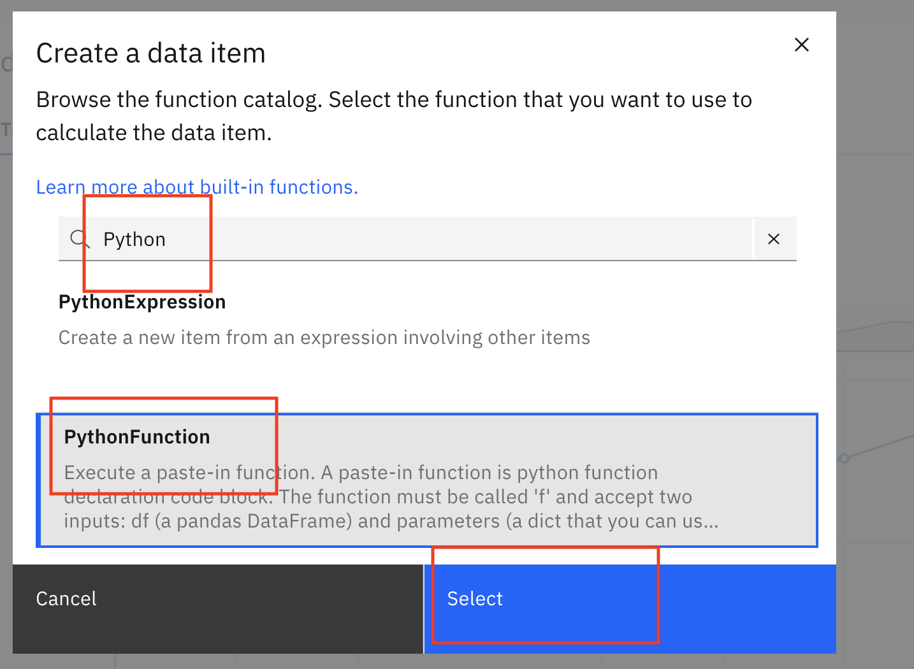
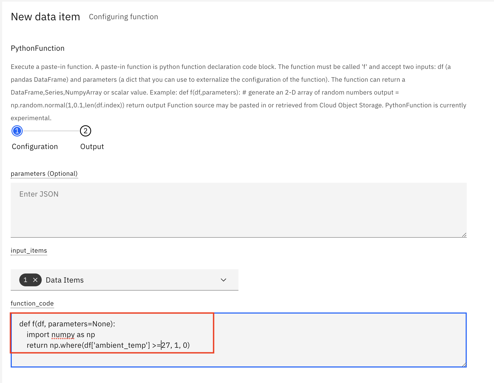
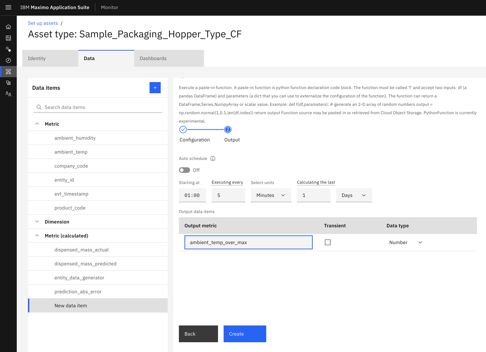
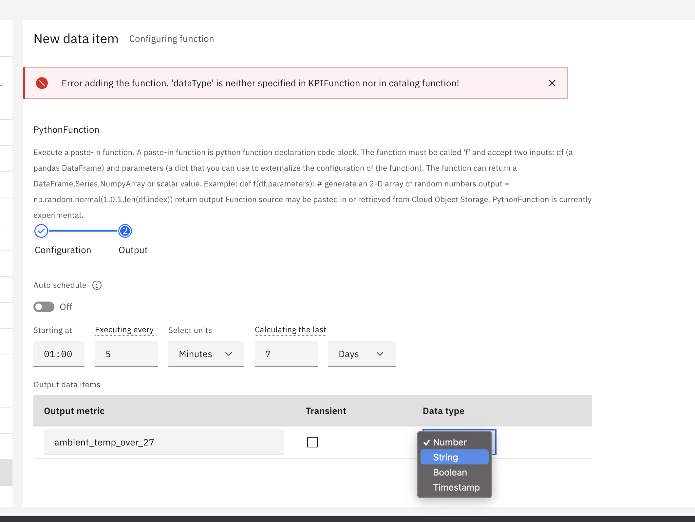
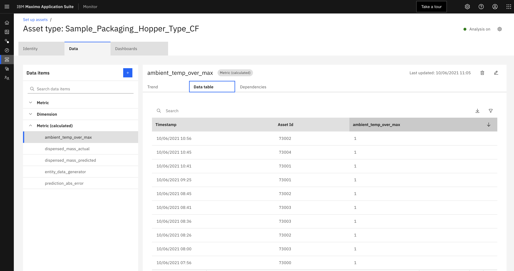

Objectives
In this Exercise using Monitor you will learn how to :
- Add a Python Function to check if the ambient temperature is greater than the maximum allowed ambient temperature constant.
The ambient temperature where the hopper asset is located should not exceed a temperature above 27 degrees. The food being packaged has a shorter shelf life when it is packaged at temperatures higher than that. A remote operational support teams monitor monitors the packaging hoppers to ensure they are all operating within the required operating ranges and without anomalies.
Before you begin:
- You have completed the pre-requisites required for all exercises
- You have completed the prior exercise in this lab.
Create a Python Function to Monitor
-
In Monitor, select
Setup Assetstab, search forSample_Packaging_Hopper_Type_yourinitials. Click on yourDevice Typeand click onSetup Asset Typebutton.

-
Click
Datatab,+button to add a new calculated metric from the catalog. Click+button and enterPuthonin the search field of the Monitor catalog. -
Click
PythonFucntionoption and theSelectbutton to add the function to yourAsset Type.
 -
Set the calculation data item inputs. Select
ambient_tempfrom theData Itemfield

-
Past the code below into the
function_codeThis will assign a value of one to this metric each time the metric value forambient_tempis equal to or above 27.def f(df, parameters=None): import numpy as np return np.where(df['ambient_temp'] >= 27, 1, 0) -
Click the
nextbutton
 -
Configure the function calculation schedule. Click the
scheduleslider to edit the schedule. Enter 7 in the fieldcalculating the lastand changettimetodaysinstead ofminutes. Also set theoutput nametoambient_temp_over_max -
Set the Output
Typetostringthen set it back tonumberthen click onCreatebutton.

!!! note
If you encounter the error below, you likely hit a bug. Carefully redo the step 8.

-
Wait 5 minutes and make sure your function doesn't have any errors and causes the pipeline analysis to stop. If it does you will see an error. Click on the
Analysis Stoppederror
 Read the message to trouble shoot. If you need more information download the log file to trouble shoot the error further.
Read the message to trouble shoot. If you need more information download the log file to trouble shoot the error further. -
Click on the calculated metric
max_temp_yourinitialsand thedata tabletab to see the time series data added to your Device Type. Sort the data by clicking onambient_temp_over_max. Note how there are now 1's and 0's for the times when the ambient temperature was abovemax_temp_yourinitialsfor each packaging hopper.
 -
Go back and now update the
PythonFucntionyou created in step 3. Modify the code to reference the constant you created in the previous exercise. Expand theCalculated metricsand click theambient_temp_over_max. Click on theopen functionicon on the top right to modify the code.
-
Add a another
pythonfunctionto evaluate the theambient_temp_over_maxand set a new calculated metric namedambient_temp_over_max_statusof type string toexceedsornormalwhen the value is 1 or 0 respectively.``` def f(df, parameters=None): import numpy as np return np.where(df['ambient_temp_over_max'] == 1, "Exceeds", "Normal")
```
Next steps
You now have a new calculated metric that will have a value of 1 each time the ambient temperature exceeds 27 degress Celcius or 0 if it is less than or equal to 27 degrees.
In the next exercise you wil create a PythonExpression to calculate the temperature_deviation between the
ambient_temp and the ambient_temp_over_max.